University of Waterloo
G.O.O.D.B.O.Y
Autonomous pick-and-place robot with tool changing, object detection, and coordinated motion control.
Role
Controls & Electrical Lead
Focus
Controls · Electrical Systems · System Integration
Tools
Arduino · C++ · Sensors · Motor Drivers · Electrical Design
01 System Overview
Designing an autonomous robotic system capable of identifying, manipulating, and sorting objects across a variable workspace.
The Challenge
G.O.O.D.B.O.Y — the Guided Omnidirectional Object Delivery Bot Optimized for Yield — was developed as an autonomous pick-and-place system capable of sorting objects throughout a 2 × 2 × 2 ft working area.
The goal of the project was to move an object between a loading zone and a drop-off zone. To achieve this our team developed a system that could identify objects, select an appropriate tool, and coordinate sensing and motion to move objects between multiple loading and drop-off zones.
Design Objectives
The system was designed around three primary objectives:
01
Range of Motion
Reach objects across multiple storage locations.
02
Compliance
Handle objects that were difficult to grasp.
03
Adaptability
Operate across variable storage conditions and object configurations.
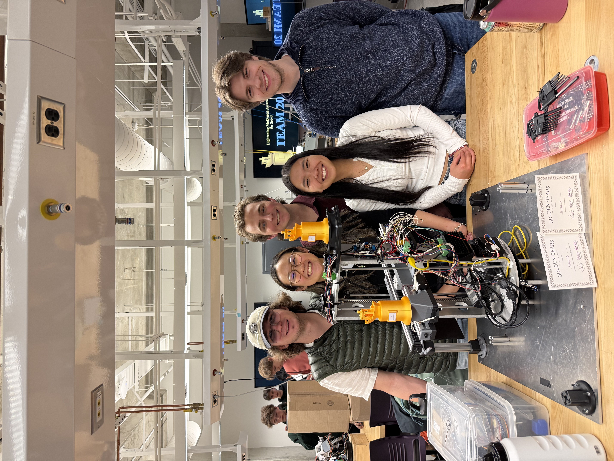
02 Electrical Architecture
Designing the electrical backbone required to coordinate motors, sensors, control hardware, and power distribution.
My Role
I owned the electrical side of the system, including wiring, component interfacing, motor and sensor integration, control hardware, and system-level electrical architecture.
I developed detailed wiring schematics using component datasheets and pinout information to define motor-driver, sensor, controller, and power connections. Signal paths and grounding were planned to reduce the risk of shorts, wiring errors, and unwanted signal noise.
Power Distribution
I analyzed the voltage and current requirements of the electrical system, summed component current draws, selected appropriate power supplies, and planned wiring paths so components remained within their rated operating limits.
This helped prevent issues such as voltage drops, inadequate power delivery, and component damage.
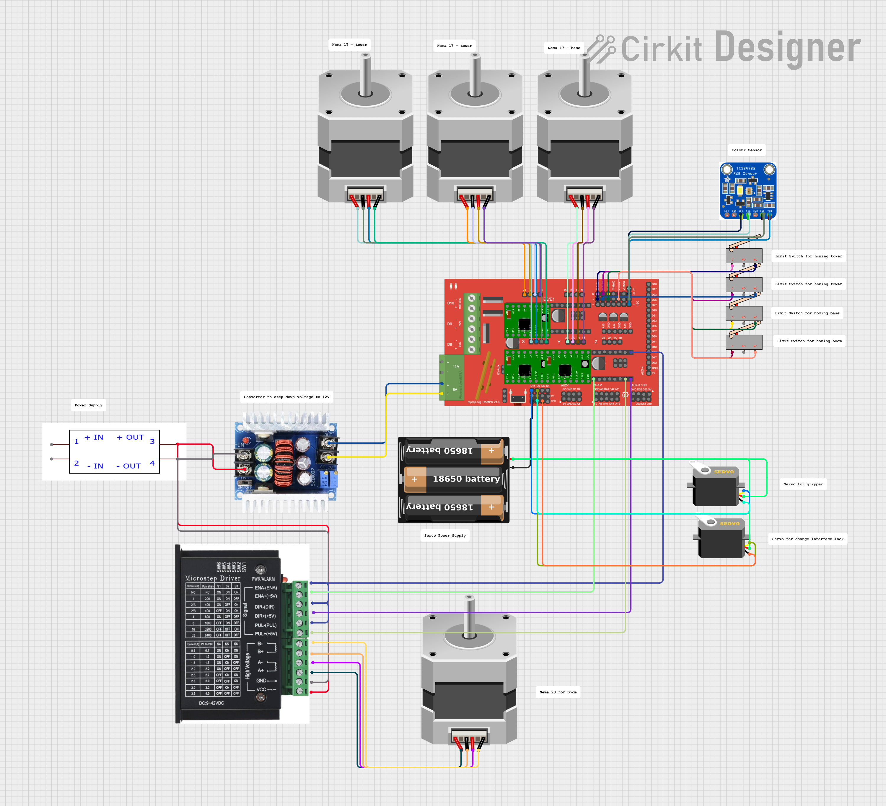
03 Controls & Autonomous Behavior
Developing the control architecture that transformed individual motors and sensors into a coordinated autonomous system.
My Approach
I developed and implemented the control software for the robot, including motor control, sensor readings, decision logic, motion sequencing, and coordinated actuator behavior.
Rather than treating the robot as one large control problem, I decomposed its behavior into modular functional components. This made the software easier to develop, test, debug, and integrate.
- Sense Read object and system sensor inputs.
- Decide Interpret sensor data and determine the required system action.
- Actuate Coordinate motors and mechanisms through sequence logic.
- Verify Use system feedback and testing to confirm the expected behavior.
Control Development
I implemented sensor calibration, noise reduction, threshold tuning, actuator sequencing, and decision logic to achieve reliable and repeatable operation.
System behavior was refined iteratively as testing revealed timing mismatches, incorrect logic, and interactions between the electrical and mechanical systems.
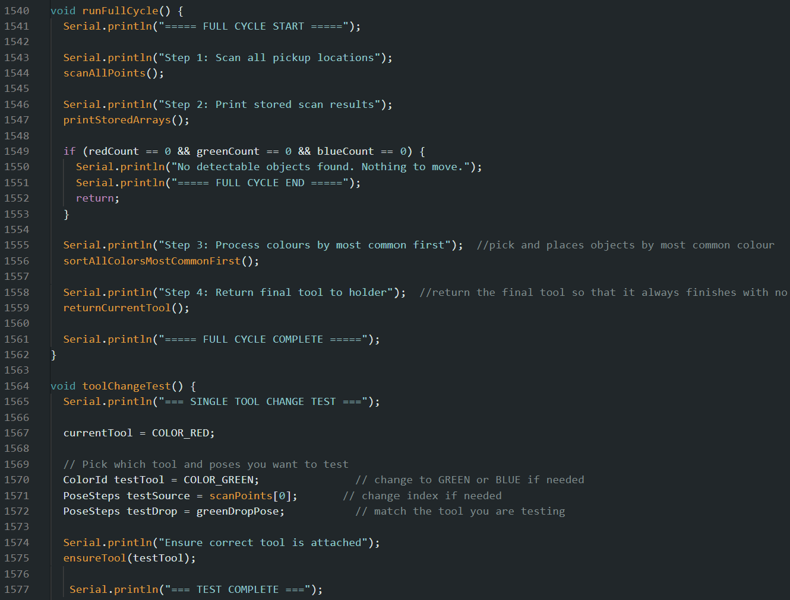
04 Engineering Analysis
Using first-principles calculations to verify that the selected hardware could reliably produce the required motion.
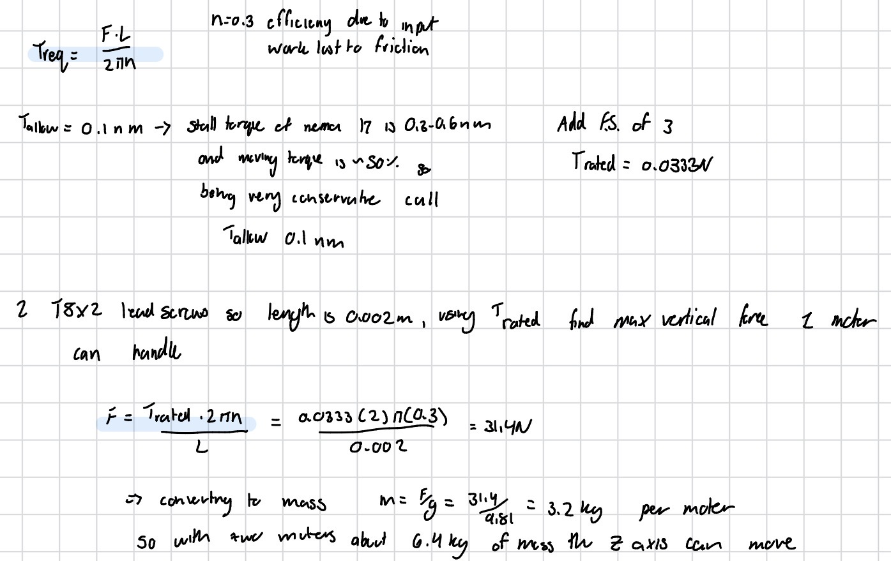
Motor Torque & Load Analysis
Required motor torques were calculated based on the geometry, loads, and operating requirements of the system.
The calculated torque requirements were compared against motor specifications including rated and stall torque. Safety factors were applied to maintain sufficient torque margin and reduce the risk of unreliable motion, motor stalling, or overheating.
05 System Integration & Debugging
Validating the system progressively from individual components to full autonomous operation.
My Approach
I led system-level integration, validation, and testing across the mechanical, electrical, and software subsystems.
Testing followed a progressive validation strategy so failures could be isolated before full-system operation.
- Component Validate individual motors, sensors, drivers, and control functions.
- Subsystem Test interacting electrical, software, and mechanical functions together.
- Full System Validate complete autonomous sequences and system behavior.
- Iterate Root cause failures and update hardware, software, or mechanical interfaces.
Root Cause & Debugging
Integration testing exposed issues including timing mismatches, incorrect system logic, electrical problems, and mechanical-electrical interaction issues.
I root-caused these failures and resolved them through electrical fixes, control-logic updates, and cross-functional debugging with the mechanical design team.
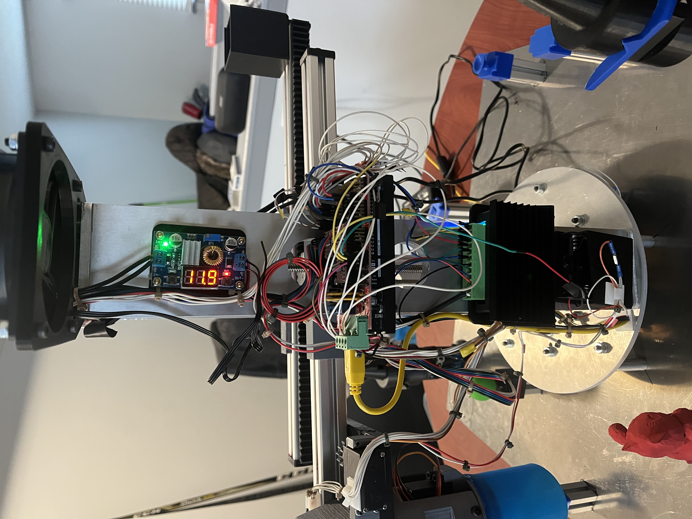
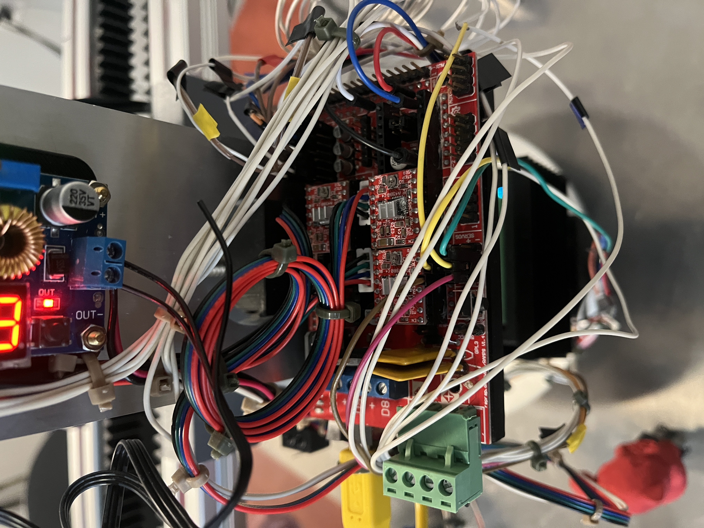
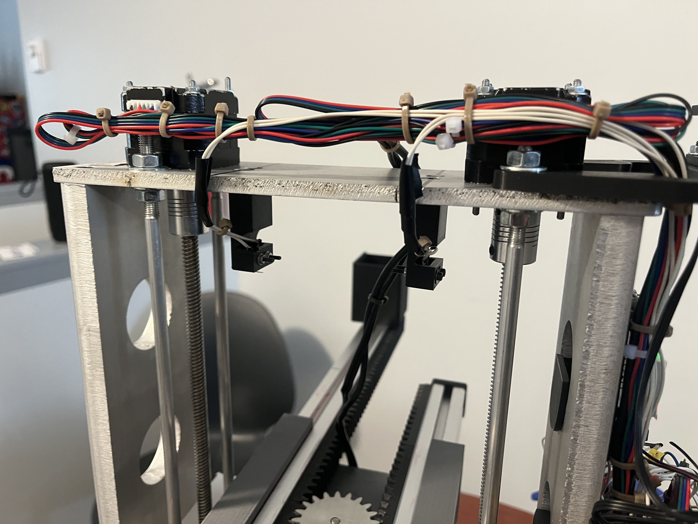
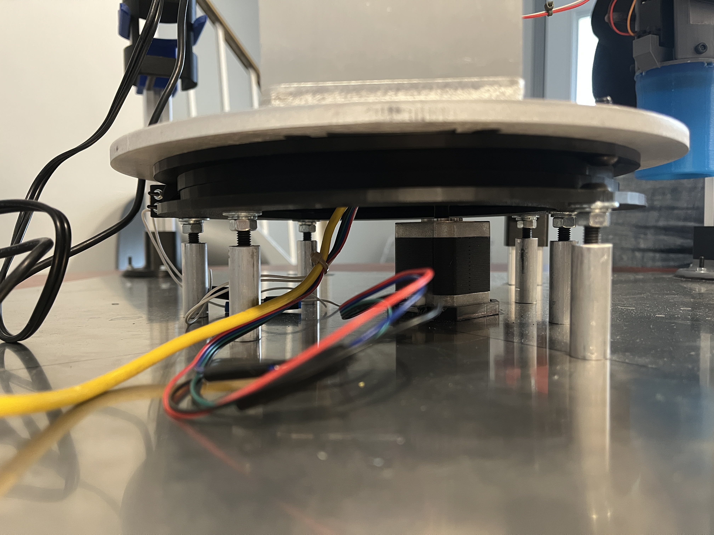
06 Final System
Integrated the electrical, controls, and mechanical subsystems into a reliable autonomous pick-and-place system.
Autonomous
Coordinated sensing, decision logic, and motor actuation enabled autonomous pick-and-place operation.
Repeatable
Robust control logic and electrical integration enabled accurate, stable, and repeatable system behavior.
Adaptable
Tool-changing capability and object sensing allowed the robot to respond to different objects and storage conditions.
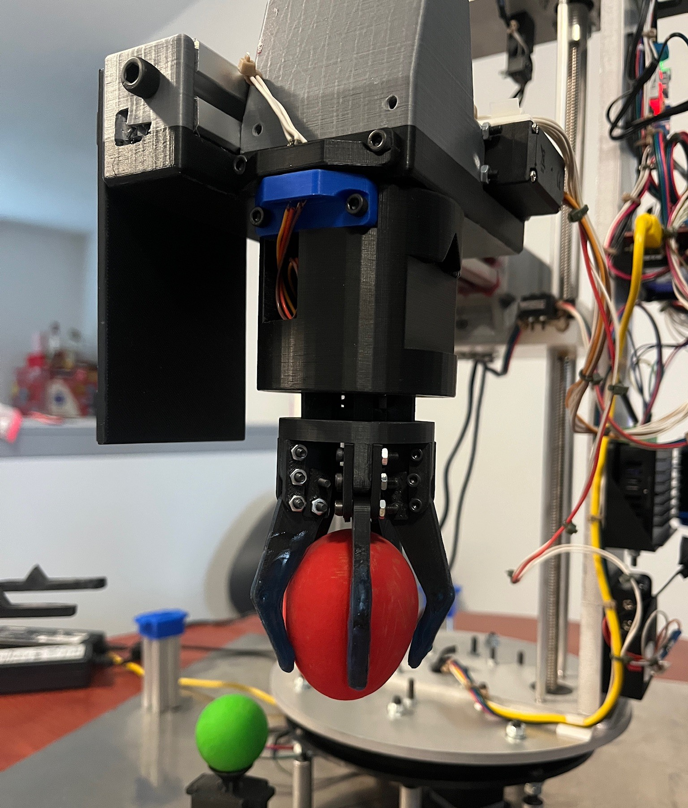
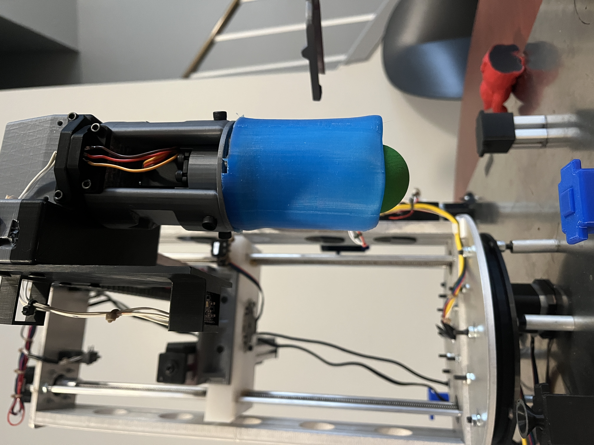
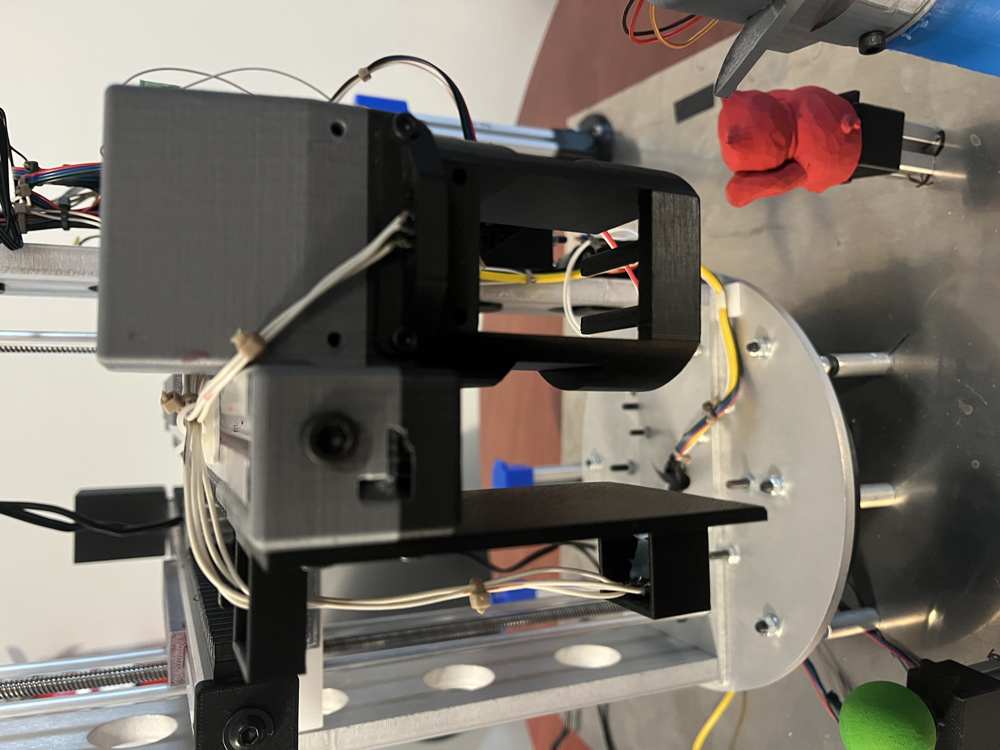
07 Engineering Takeaways
Design the Architecture First
Upfront calculations, electrical schematics, and system architecture reduce integration issues and downstream rework.
Build Modular Controls
Breaking complex behavior into sensing, decision, and actuator functions makes development and debugging significantly more manageable.
Validate at Every Level
Progressing from component to subsystem to full-system validation makes failures easier to isolate and root cause.